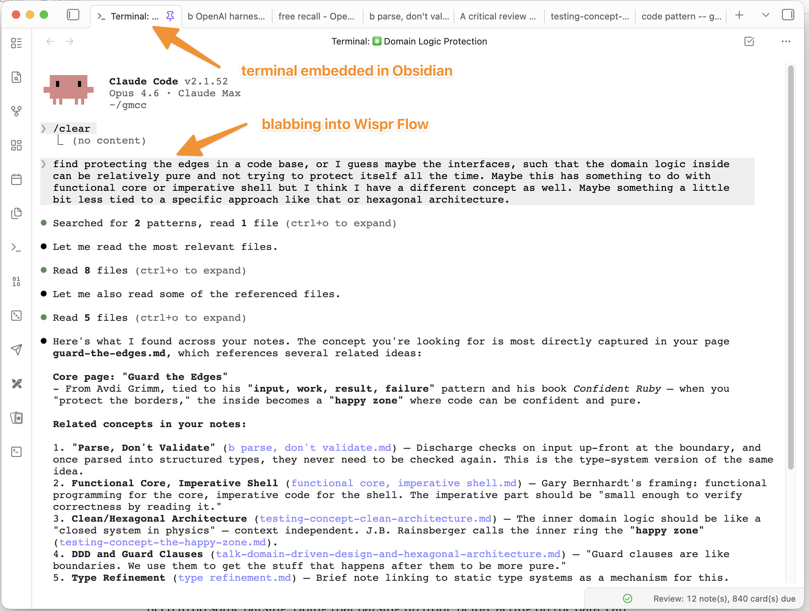

example - using DeepSearch in Claude Code in a terminal in Obsidian to find a page about a software concept
^ example - using DeepSearch in link not tracked to find a page about a software concept

So, there's a terminal embedded in obsidian, and we run Claude Code in it. Claude Code has access to the Obsidian Vault (which is just a huge directory of link not tracked files that are densely linked to each other)
I use link not tracked for blabbing into Claude Code, since I'm a mediocre typist, and because I have found that link not tracked
So, the page it found, above, was link not tracked. That was helpful, because I was actually looking to construct a slightly more link not tracked (which I subsequently created): link not tracked. I wanted that concept so I could link to it from an interesting post, link not tracked about how, in Haskel you can link not tracked by taking advantage of its strong link not tracked capabilities, allowing you to then work primarily in link not tracked.
Ok, so this is pretty compelling use of Obsidian and Claude Code, but actually the broader idea is markdown graphs and agents, and link not tracked.